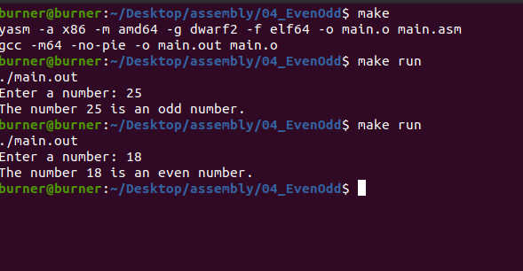
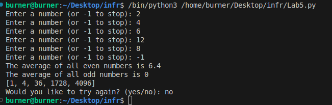

In my recent years learning how to code I have worked on many projects in areas such as python, C++, Java and html/CSS and even assembly.
This is one of my assembly projects to check wether a number is even or odd. It is a simple program but when using assembly it becomes very complicated. Click on the picture to see the code.
This is a Python project which takes an input of however many numbers then produces the average of all even and odd numbers. It also outputs a list with each number to the power of the element of its place in the list. Click on the picture to see the code.